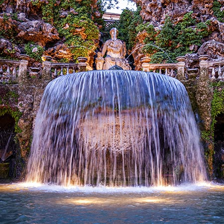
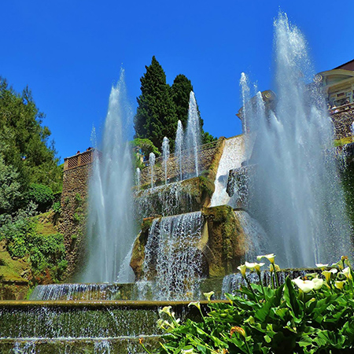
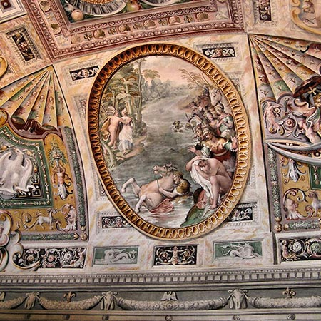

La Villa
descrizione
le fontane
L'architettura e la natura si fondono in maniera fantastica e a rendere ancora più suggestivo questo insieme intervengono le numerose fontane e cascate studiate e realizzate in maniera armoniosa.
Basta citare la grandiosa Fontana dell'Organo Idraulico, dove un organo suonava grazie ai getti dell'acqua.
Le Cento Fontane costeggiato a monte da due ordini continui di vasche
sovrapposte, cannoli a forma di gigli, di aquile e di obelischi dai quali fuoriesce acqua zampillante.
La Fontana dell'Ovato di forma ovaloide rovescia nel bacino le acque dell'Aniene da cui, poi, viene alimentato quasi tutto il giardino.
La Fontana del Bicchierone costituita da una grande conchiglia sormontata da un calice floreale spumeggiante di zampilli.


il capolavoro dei giardini
Quando Pirro Ligorio intraprese l'arduo compito di progettare
Villa D'este, i canoni fondamentali dell'arte del giardino all'italiana erano già
stati teorizzati nel '400 e realizzati in molte grandi Ville del '500.
Ma, la sua genialità gli consentì di superare tutti gli altri esempi esistenti
portando alla luce un giardino capolavoro, esempio di ingegneria idraulica.
Ogni angolo dei giardini riserva un imprevedibile alternarsi di acqua e di verde, una
scenografia equilibrata dalle mille angolazioni diverse. Questa meravigliosa residenza
rinascimentale è famosa anche per la presenza di alberi di ogni genere. A partire dalla
Rotonda dei Cipressi, circondata da imponenti e maestosi alberi, ai pini secolari, alberi di alloro,
sequoie, limoni, mirti e vari alberi da frutto. Crescono, inoltre, 30.000 piante a
rotazione stagionale e, in tempi recenti, sono state introdotte numerose piante di rose.
il palazzo d'este
Il Cardinale Ippolito D'Este fece decorare gli interni con un perfetto calcolo architettonico.
Numerosi furono gli scultori, i ceramisti e i mosaicisti che contribuirono negli anni a creare gli affreschi del Palazzo.
Da questa idea nasce il complesso del Palazzo D'Este che oggi tutti i visitatori possono ammirare.
La facciata principale del Palazzo è
molto elegante. Quando si arriva al vialone della Gran Loggia, si accede a una scalinata che porta a un salone,
dove si possono vedere numerosi affreschi che riempiono gli ambienti interni.
Il Palazzo D'Este è sviluppato su tre piani molto interessanti: Appartamento Vecchio o
Superiore, la Sala delle Storie di Salomone e l'Appartamento Inferiore.

tivoli
Tivoli sorge a 31 chilometri a est di Roma situata sulle pendici dei Monti Tiburtini a 235 metri s.l.m
alla sinistra del fiume Aniene.
La città ha un'origine antichissima, lo testimoniano i resti archeologici di età preistorica, etrusca e romana.
Tra questi, di particolare interesse, sono il Tempio di Vesta, costruzione di forma circolare;
il Tempio della Tosse, un sepolcro di epoca romana e il Santuario di Ercole.
Tivoli presenta anche altre bellezze: oltre al Duomo e alla Chiesta di San Silvestro, un'attrazione particolare esercitano la Villa Gregoriana e la Villa Adriana. Villa Gregoriana è un incantevole parco verde gestito dalla FAI, caratterizzato da boschi, da grotte, da sentieri e da una cascata. Villa Adriana, anch'essa Patrimonio mondiale dell'Umanità è il simbolo archeologico di Tivoli.
Tivoli presenta anche altre bellezze: oltre al Duomo e alla Chiesta di San Silvestro, un'attrazione particolare esercitano la Villa Gregoriana e la Villa Adriana. Villa Gregoriana è un incantevole parco verde gestito dalla FAI, caratterizzato da boschi, da grotte, da sentieri e da una cascata. Villa Adriana, anch'essa Patrimonio mondiale dell'Umanità è il simbolo archeologico di Tivoli.
scheda tecnica
La dimora del Cardinala Ippolito D'Este è visitata ogni anno da circa 500.000 persone confermandosi uno dei siti UNESCO più visitati in Italia. La Villa è dotata di ascensore
dal piano strada fino alla terrazza superiore del giardino e di un servizio automezzi
elettrici per permettere ai portatori di handicap l'accesso al giardino.
dal piano strada fino alla terrazza superiore del giardino e di un servizio automezzi
elettrici per permettere ai portatori di handicap l'accesso al giardino.
| Orario visite | Tariffe | Raggiungere la Villa |
|---|---|---|
| Ora solare 8.30-17.00 | Intero 12 euro | Automobile (Autostrada A24-Tivoli) |
| Ora legale 8.30-19.00 | Ridotto 7 euro | In treno (Roma-Pescara, Stazione Tivoli) |
Costruzione: XVI secolo
Stile: Rinascimentale
Committente: Ippolito II d’Este
Riconoscimento: patrimonio
dell’UNESCO dal 2001
Posizione: Tivoli, città a 33 km da Roma
Superficie: 35.000 metri quadrati di giardini
Piante e alberi: 15.000
Fontane: 50
Vasche: 100
Zampilli: 250